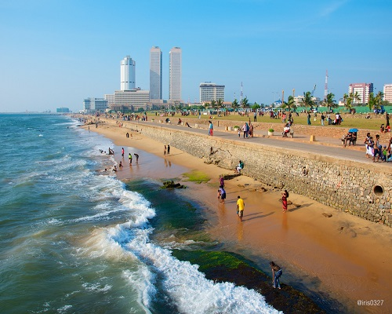
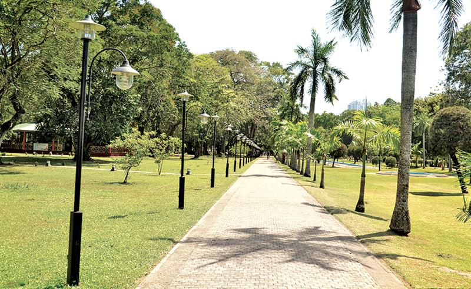

The Parliament of the Democratic Socialist Republic of Sri Lanka is the supreme legislative body of Sri Lanka. It alone possesses legislative supremacy and thereby ultimate power over all other political bodies in the island. It is modeled after the British Parliament. It consists of two hundred and twenty-five (225) members known as Members of Parliament (MPs). Members are elected by proportional representation for five-year terms, with universal suffrage. Parliament reserves the power to make all laws. The President of Sri Lanka has the power to summon, suspend, prorogue, or terminate a legislative session and to dissolve the Parliament. The Speaker or, in his absence the Deputy Speaker and Chairman of Committees or the Deputy Chairman of Committees, presides over Parliament.
The first legislature established in Ceylon was the Executive Council and the Legislative Council, which were established on March 13, 1833 according to the recommendations of the Colebrook-Cameron commission. The Executive Council was composed of the Colonial Secretary, the officer commanding the Military Forces, the Attorney General, the Auditor-General and the Treasurer and the duties of the council were advisory and the Governor of Ceylon, who presided over their meetings and consulted them but was at liberty to disregard their advice. At first it was made up of only British officials but later included native citizens. At the beginning 16, and later 49, members were elected for the Legislative Council, but a limited number of people were qualified to vote. In 1931 the Legislative Council was dissolved and in its place a more powerful State Council of Ceylon was established with its 101 members elected by universal adult franchise as provided by the Donoughmore Constitution.

The architecture of the building is inspired by the 12th-century Nelum Pokuna (lotus pond) in Polonnaruwa.[6] Built by King Parakramabahu the Great, Polonnaruwa's Nelum Pokuna is shaped as a stylised eight-petalled lotus flower. The total estimated cost of the project is LKR 3080 million.[7] Government of the People's Republic of China provided LKR 2430 million out of the total cost of the building.[6] The building spreads over 14,000 square metres of floor area.[6] The theatre is equipped with ultra modern facilities such as an auditorium with 1,288 seats, a library, and training facilities.[1] The building features two permanent theatres—the main auditorium and an open-air theatre—and the ability to convert the front steps into an additional open-air theatre. The 690-square-metre moving stage in the auditorium includes the ability to raise and lower the orchestra pit to and from stage level. There are facilities to conduct educational and research activities. Parking for 500 vehicles, is also available
A couple of decades ago the park was still much-loved by the residents of Colombo, especially its children. However, it was not as beautiful or as neatly arranged as it is now. It comprised mostly of woodland thinly spread with trees and occasional paths meandering through. Amongst the dark shadows of the bows romantic couples met for their dalliances, which they could not have under the keen eyes of the public. Flowers, grass and other undergrowth grew wild and rampant; with the groundskeepers barely able to control them. There was a murky lake, with a damaged bridge over it. The park had three entrances at the time; and close to one of the entrances was a small amusement park. This park was the delight of the local kids in Colombo as it had quite a few popular rides, such as a Merry-go-round and a bumper car ride; fair food like cotton candy; and many other wonderful things. Therefore that entrance was especially popular during the weekend and stayed open till late unlike the other gates. However as computers, phones, televisions and other modern devices appeared throughout Colombo, heralding an era of technology in Sri Lanka, Victoria Park was slowly forgotten. Its rides were unlit and silent, barely any children visited the place, the leafy avenues were empty and haunted by the memories times long past. The park was almost ready to disappear. But then in 2013, fortune favored it. The 23rd Commonwealth Heads of Government Meeting happened in Colombo; and the government did some extensive sprucing up of the city to make it look more attractive. Viharamahadevi Park, being centrally located, received a complete makeover. The fences and gates were removed enabling visitors to enter wherever they wished. This also enabled a continuity between the street, the park, the library and the World War Memorial. Beautiful paved pathways, lush palm trees and perfectly groomed grass have been added. There are now some delightful little hollows with pleasant wooden or concrete seats. There are no more overgrown bushes for lovers or thieves to hide behind, so it’s not dodgy and dark anymore. While romance is still aground, it’s quite openly done and has a lighter brighter note. Unlike before guards don’t chase them away and give them their privacy. The lake has been cleaned and the ruins of the old bridge removed. Instead a sturdy suspension bridge ahas been added above it making the wobbly path a popular attraction amongst both adults and children. There are clean concrete slabs around the lake to sit and enjoy the view